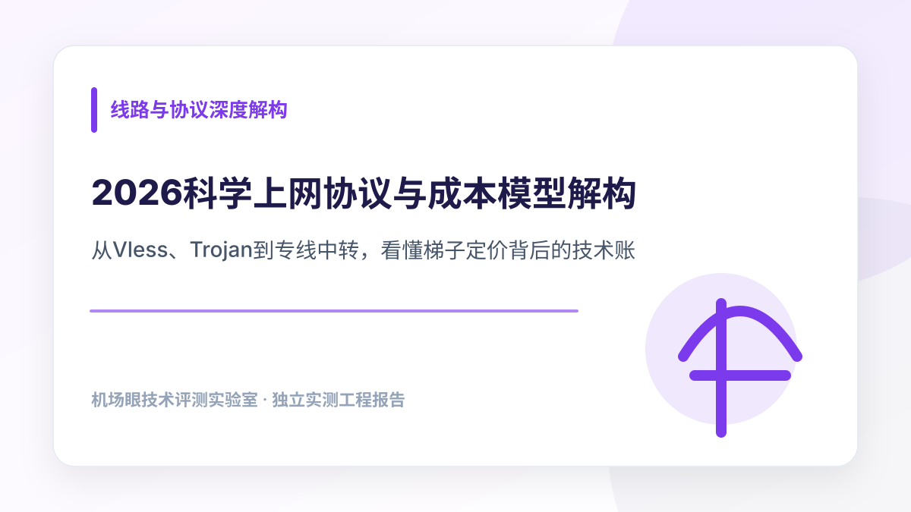

线路与协议深度解构 · 2026-11-08
2026科学上网协议与成本模型解构：从Vless、Trojan到专线中转，看懂梯子定价背后的技术账
市面上机场套餐价格差异显著，从月付几元的极低价方案到数十元的高端专线并存。本文从 IDC 机房采买成本、跨国专线带宽月租、协议封装损耗及超售数学模型出发，客观横向测评不同架构服务商的单 G 流量真实价值，帮助用户建立理性的技术选型认知。
在当前的代理网络市场中，用户常常能看到两种极端定价：一边是“9.9 元 1000G 不限时”，另一边是“30 元仅 100G 专线”。表面上看，两者的计量单位均为“GB”，但实际运行体验却天差地别——前者在晚高峰几乎连 Google 首页都无法加载，而后者即便在跨国高并发时段依然流畅平稳。很多初次接触代理工具的用户容易被表面的“超大流量”标签所吸引，误以为买到了性价比极高的套餐，却忽视了背后的可用性成本。用户在参考各类机场推荐目录进行决策时，如果仅从价格绝对值横向对比，极容易陷入超售商家的价格陷阱。深入拆解服务商背后的机房采买、物理专线带宽月租与协议封装损耗，看懂服务定价的底层技术账本，是建立科学决策体系的唯一路径。
一、 揭秘机场定价模型：服务器机房采购、专线月租与超售数学陷阱
任何正规运营的网络代理服务，其底层成本都可以被拆解为三个不可压缩的硬性板块：国内入口接入成本、跨国传输通道租金、以及海外落地机房（Egress）带宽与 IP 费用。
| 线路架构类型 | 物理通道特征 | 独享带宽月成本基准 | 常见超售比例 (Overbooking) | 晚高峰抗丢包表现 |
|---|---|---|---|---|
| 企业级物理专线 (IEPL/IPLC) | 端到端物理光缆微波切片，不过公网边缘防火墙 | 约 ¥80 ~ ¥150 / Mbps / 月 | 1 : 3 ~ 1 : 8（轻度超售） | 极佳（丢包率常年 < 0.3%） |
| BGP 公网中转 (Transit) | 国内多线 BGP 服务器接收流量，公网加密中转出境 | 约 ¥20 ~ ¥45 / Mbps / 月 | 1 : 15 ~ 1 : 30（中度超售） | 良好（受公网骨干波动轻度影响） |
| 公网直连 (Direct VPS) | 本地网络经公网国际出口直连海外 VPS | 约 ¥3 ~ ¥10 / Mbps / 月 | 1 : 50 ~ 1 : 100+（重度超售） | 较差（晚高峰国际出口丢包可达 10%~30%） |
1. 破除“极低价无限流量”的超售数学陷阱
根据物理香农定律与电信运营商结算标准，1Gbps 的高质量企业级 IEPL 物理专线带宽，每月的硬性采买成本普遍在数万元人民币。若一个服务商提供 10 元/月 500GB 的套餐，假设拥有 1000 个在网用户，在晚高峰即使每人仅占有 2Mbps 带宽，总峰值需求就高达 2Gbps（折合专线月成本数十万元），而收取的月费总额仅有 10,000 元。这种财务模型若要成立，服务商唯一的手段就是极端超售（Overbooking）：将超售比放大至 1:100 以上，并依赖“绝大多数用户闲置不跑”的假设。一旦遇到突发流量或晚高峰，服务器网络栈缓冲区被瞬时填满，丢包率瞬间飙升至 20% 以上，导致连接大面积挂起。
2. 为什么低价机场容易陷入“跑路恶性循环”？
超售模式不仅影响用户体验，更是许多小型机场资金链断裂的根源。在商业运作中，低价往往伴随着年付甚至多年付的营销刺激。服务商通过低价快速归集现金流，但随后的月度服务器与专线带宽账单是刚性支出的。当新用户增长放缓，往期用户的流量消耗持续发生，当月的入账资金便无法覆盖物理带宽采购支出。此时服务商面临两条路径：要么严重缩减带宽导致全线瘫痪，要么更换廉价低质公网线路，最终在资金耗尽时关停社群、失联跑路。因此，理性的消费者必须清醒认识到：脱离物理成本支撑的“绝对低价”，本质上是不可持续的庞氏博弈。
二、 协议与网络底层实测横评
除了物理传输通道，传输协议（Shadowsocks、Trojan、VLESS Reality）在加解密握手、TLS 混淆、数据包头部封装损耗及系统内核负载上亦有显著差异：
- Shadowsocks (AEAD)： 基于对等预共享密钥的对称加密（如 ChaCha20-Poly1305 / AES-GCM）。其特征是零额外 TLS 握手 RTT，数据包开销极小，客户端 CPU 资源消耗最低；但在公网直连环境下容易被机器学习模型识别包长特征。
- Trojan： 将流量深度伪装在标准的 TLS 1.3 隧道内，握手特征与正常 HTTPS 请求高度一致。缺点是增加了至少 1 个 RTT 的 TLS 握手延时，并在客户端与服务端存在加解密与内存拷贝开销。
- VLESS + Reality： 移除了协议自身的冗余对称加密，直接复用底层 TLS 证书握手通道，并伪造 SNI 指向境外真实大型网站。对中低性能移动端设备极为友好，吞吐上限高。
基于上述协议机制，我们在同一基准测试节点下，对三家采用不同技术架构的服务商进行了长达 72 小时的持续吞吐与资源损耗采样横评：

大佬云
多协议支持与高吞吐网络大流量流媒体 4K 播放、持续高并发下载与多终端混用。节点池完整覆盖 Shadowsocks、Trojan 与 Vless 协议，适配各类老旧与现代客户端。
其多协议节点池中，部分 Vless 节点采用动态 TLS 阻断伪装，在个别老旧内核客户端上可能偶发握手错误，建议配合最新版本 Clash Verge Rev 或 Sing-box 使用。

闪电鼠
轻量化节点配置与低单价通道日常网页查询、轻量文本交互、不限时按需消耗或第二备用节点。低成本灵活计费，有效避免固定月费的沉没损耗。
其轻量化节点主打性价比与高弹性，适合作为流量缓冲方案；若有超大体积归档持续拉取需求，单 G 成本优势会随着突发带宽占用而边际递减。

云界线
企业级纯专线物理传输严格追求低延迟、零丢包的敏感交互场景。物理专线不经过公网，即使在大规模网络波动期间依然保持边际通信高可靠性。
纯专线单位带宽成本偏高，适合用于高价值生产力与核心业务；对于大文件批量挂机下载，使用专线流量并不具备成本效益，需合理区分使用场景。
三、 低抖动网络与生产力工具的工程权衡
通过成本拆解可知，“专线中转”与“公网中转”之间的价格差异并非品牌溢价，而是物理线路基础建设的硬性成本反映。在很多对长连接极度敏感的场景中，丢包率与延迟抖动对生产力的破坏力远超过单纯的下载速度。如果你正在从事海外远程办公、高频代码协同或大模型交互，想要深入探究网络丢包对 WebSocket 与长连接流式输出的具体物理杀伤机制，建议深入阅读本专栏对应的实测报告《跨境办公与开发者网络稳定性实测》。
四、 用户如何根据自身每月真实数据吞吐量选择最具经济效益的方案
理性的网络成本控制，需要摆脱对“套餐总流量越大越好”的盲目崇拜，建立按需分层的资产配置观：
1. 统计真实有效吞吐量（排除客户端虚标）
很多用户每月购买了 200GB 套餐，但实际查阅系统统计，日常浏览与文档查阅每月真实消耗通常不超过 25GB。对于这类用户，盲目购买高月费大流量套餐实际上是严重的沉没成本浪费；选用单 G 价值更高但基础月费较低的轻量弹性方案，资金利用效率最佳。
2. 月付 vs 季付的风控考量
从技术财务视角来看，服务商预收用户的长期资金（年付/三年付）往往伴随着高额的运营负债。历史上绝大部分服务中断与跑路事件，均由于服务商在早期低价吸纳大额长期预付款、随后无法覆盖持续增长的物理带宽月租引发。因此：
- 优先选择月付（或最多季付）： 保持个人对上游服务质量的动态裁决权，一旦出现线路降级或超售恶化可即刻止损；
- 警惕反常折扣： 若某服务商年付价格低于月付累计金额的 5 折以下，通常意味着其现金流处于极度渴求状态，潜藏高危超售甚至不可控违约风险；
- 多维度横向交叉验证： 在实际订阅前，务必查阅客观权威的机场推荐横向看板，比对实际测速与真实用户口碑。
五、 协议选型常见问题解答 (FAQ)
1. VLESS Reality 是否可以完全替代 Trojan 和 Shadowsocks？
从协议架构上看，VLESS Reality 移除了中间层冗余加解密，直接伪造标准 TLS 握手，性能和抗审查表现优异。但在企业软路由、老旧智能电视机顶盒或部分缺乏最新 Mihomo/Sing-box 内核的设备上，VLESS Reality 的兼容性仍不及传统的 Shadowsocks。因此在选型时，服务商是否具备“主协议新颖 + 备用协议成熟”的混合协议池同样重要。
2. 为什么相同流量下，节点倍率（0.5x vs 2x）会对实际账单产生巨大影响？
部分服务商在宣传时声称“100G 套餐仅售 10 元”，但在节点列表里将所有可用节点均标注为 2.0x 或 3.0x 倍率。这意味着用户每实际下载 1GB 数据，系统后台会扣除 2GB~3GB 套餐余额，其实际可用流量缩水至原本的三分之一甚至更低。购买前务必核对常用落地节点的真实倍率分布，避免落入隐蔽的倍率陷阱。